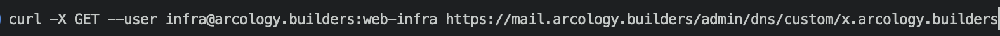

REST - Representational State Transfer
- URL based resources
- Hierarchy
- Methods analogous to CRUD
Anatomy of a URL
<scheme>://<hostname>/<subroute>/<subsubroute>
http://www.ers.usda.gov/data-products/organic-prices/
A Remote HashMap
- Hierarchical keys
- Keys / values usually stored in a database
- Values are usually JSON but can be any MIME type
- Adding a previously existing key overwrites it with a new value
HTTP and HashMap Methods
- GET method is like `.get()` in Java
- POST method is like `.put()` in Java
curl command
Lets you send HTTP requests from command-line and displays response
To GET a current binding
The following is an example specific to Mail-in-a-box installations, like ours
curl -X GET --user <email@domain.com>
https://mail.domain.com/admin/dns/custom/sub.domain.com

curl command
curl -X GET --user <email@domain.com>
https://mail.domain.com/admin/dns/custom/sub.domain.com
For the POST command to update the DNS binding, make the following changes to the GET version above
-X POST
instead of -X GET
- Add an additional option
-d 1.2.3.4
What to do after a POST to verify that the new DNS binding is effective?
In-Class Activity: Finish Dynamic DNS Setup
- Where does Linux (Ubuntu) run scripts on startup?
- How to get the current IP address on the public network interface?
- Combine them: on startup, run the POST command with the correct arguments